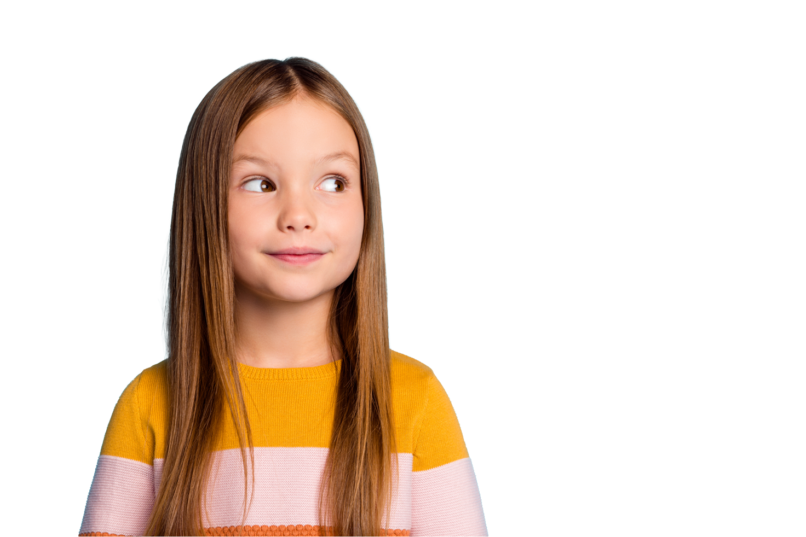
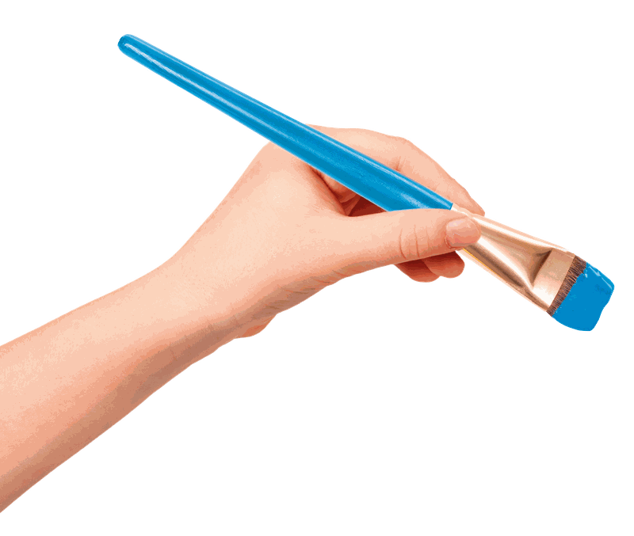

Fare bene fa bene al cuore.
Dal 1828 il Cottolengo è una casa per chi è solo e fragile: anziani, persone con disabilità, bambini e famiglie in difficoltà. Insieme a te possiamo continuare ad accoglierli. Bastano 35 € per offrire 7 pasti caldi.
0
pasti caldi serviti a persone in difficoltà
0
l'anno in cui tutto è cominciato, a Torino
0
continenti in cui siamo presenti con case e missioni
0
ambiti di cura: anziani, disabilità, minori, salute, povertà
Chi aiuti con il tuo gesto
Tutti i progetti del Cottolengo sono divisi in quattro aree. Scegli quella che ti sta più a cuore: la tua donazione sosterrà i suoi progetti.
-
-
Accoglienza
Una casa e una famiglia per persone con disabilità e per chi non ha più nessuno.
Scopri e dona -
Educazione
Scuola, sostegno a distanza e aiuto alle famiglie, perché ogni bambino possa crescere.
Scopri e dona -
Missioni internazionali
Cure, scuola e accoglienza nelle missioni del Cottolengo in Africa, America Latina e Asia.
Scopri e dona


Come fare del bene
Cinque modi per stare accanto a chi ha bisogno. Scegli quello più vicino a te.
-
Sostegno a distanza
Accompagna la crescita di un bambino: scuola, cibo e cure, mese dopo mese.
Oppure chiama 348 8989163, Sr Mary Soshiyat
Scopri come aderire -
5×1000
Una firma nella dichiarazione dei redditi vale cure e accoglienza per tanti. Non ti costa un euro.
Come firmare -
-
Testamento solidale
Il loro futuro è la tua eredità più grande. Un lascito, anche piccolo, resta per sempre.
Scopri di più -
Volontariato
Dona il tuo tempo: al fianco degli ospiti, nelle attività e negli eventi della Piccola Casa.
Diventa volontario
Crea una raccolta solidale
Un compleanno, un traguardo, una sfida: invita amici e parenti a donare per gli ospiti della Piccola Casa.
Crea la tua raccoltaDove va la tua donazione
Vogliamo che tu sappia sempre come viene usato il tuo aiuto.
Ecco come vengono impiegati i fondi raccolti.*

-
84%
Assistenza e progetti di carità
Pasti, cure mediche, accoglienza e missioni in 4 continenti.
-
10%
Funzionamento delle case
Le strutture che ogni giorno tengono le porte aperte.
-
6%
Raccolta fondi e comunicazione
Per far conoscere i progetti e trovare nuovi amici.
* Dati indicativi a scopo di esempio: da sostituire con i valori del bilancio sociale.